컴퓨터응용밀링기능사 (2013-01-27 기출문제)
1과목: 기계재료 및 요소
1. 부식을 방지하기 위한 방법으로 알루미늄(Al)의 방식법(防蝕法)이 아닌 것은?
- 수산법
- 황산법
- 니켈산법
- 크롬산법
(정답률: 59%)

2. 베어링 합금이 갖추어야 할 구비조건이 아닌 것은?
- 열전도율이 커야 한다.
- 마찰계수가 크고 저항력이 작아야 한다.
- 내식성이 좋고 충분한 인성이 있어야 한다.
- 하중에 견딜 수 있는 경도와 내압력을 가져야 한다.
(정답률: 70%)
3. 기계재료의 성질 중 기계적 성질이 아닌 것은?
- 인장강도
- 연신율
- 비열
- 전성
(정답률: 72%)
4. 철강 및 비철금속재료 중에서 회주철의 재료 기호는?
- GC 300
- SC 450
- SS 400
- BMC 360
(정답률: 67%)
5. 보통주철의 특성에 대한 설명으로 틀린 것은?
- 진동흡수 능력이 있다.
- 강에 비해 연신율이 작다.
- 강에 비해 인장강도가 크다.
- 용융점이 낮아 주조에 적합하다.
(정답률: 46%)
6. 7:3 황동에 주석 1% 정도를 첨가한 동합금은?
- 네이벌 황동
- 망간 황동
- 애드미럴티 황동
- 쾌삭 황동
(정답률: 66%)
7. 강의 절삭성을 향상시키기 위하여 인(P)이나 황(S)을 첨가시킨 특수강은?
- 쾌삭강
- 내식강
- 내열강
- 내마모강
(정답률: 82%)
8. 재료의 반복하중 및 교번하중이 작용할 때 재료 내부에 생기는 저항력은?
- 외력
- 응력
- 구심력
- 원심력
(정답률: 83%)
9. 기어의 잇수가 각각 40, 50개인 두 개의 기어가 서로 맞물고 회전하고 있다. 축간 거리가 90㎜ 일 때 모듈은?
- 1
- 2
- 3
- 4
(정답률: 60%)
10. 다음 중 전동용 기계요소에 해당하는 것은?
- 볼트와 너트
- 리벳
- 체인
- 핀
(정답률: 76%)
11. 다음 중 나사의 리드(lead)가 가장 큰 것은?
- 피치 1mm의 4줄 미터 나사
- 8산 2줄의 유니파이 보통 나사
- 16산 3줄 유니파이 보통 나사
- 피치 1.5mm의 1줄 미터 나사
(정답률: 47%)
12. 인장스프링에서 하중 100N이 작용할 때의 변형량이 10㎜일 때 스프링 상수는 몇 N/㎜인가?
- 0.1
- 0.2
- 10
- 20
(정답률: 77%)
13. 스프링 소재는 금속 스프링과 비금속 스프링으로 분류할 때 비금속 스프링에 속하지 않는 것은?
- 고무 스프링
- 공기 스프링
- 동합금 스프링
- 합성수지 스프링
(정답률: 76%)
14. 안내 키(key)라고도 하며, 축 방향으로 보스를 미끄럼 운동시킬 필요가 있을 때 사용되는 것은?
- 성크 키
- 페더 키
- 접선 키
- 원뿔 키
(정답률: 55%)
15. 다음 V벨트 종류 중 인장강도가 가장 작은 것은?
- M
- A
- B
- E
(정답률: 64%)
2과목: 기계제도(절삭부분)
16. 나사의 도시방법에 관한 설명 중 틀린 것은?
- 나사의 끝면에서 본 그림에서 모따기 원을 표시하는 굵은 선은 반드시 나타내야 한다.
- 나사의 끝면에서 본 그림에서 나사의 골 밑은 가는 실선으로 그린 원주의 3/4에 거의 같은 원의 일부로 표시한다.
- 나사의 측면에서 본 그림에서 나사산의 봉우리를 굵은 실선으로 표시한다.
- 나사의 측면에서 본 그림에서 나사산의 골 밑을 가는 실선으로 표시한다.
(정답률: 40%)
17. 다음 중 정보를 나타내기 위한 목적으로만 사용하는 치수로서 가공이나 검사공정에 영향을 주지 않고 도면상의 기타 치수나 관련 문서의 치수로부터 산출되는 치수로서 괄호 안에 기입하는 치수는?
- 기능 치수(functional dimension)
- 비기능 치수(non-functional dimension)
- 참고 치수(auxiliary dimension)
- 소재 치수(basic material dimension)
(정답률: 79%)
18. 다음 끼워맞춤에 관계된 치수 중 헐거운 끼워 맞춤을 나타낸 것은?
- ø45 H7/p6
- ø45 H7/js6
- ø45 H7/m6
- ø45 H7/g6
(정답률: 65%)
19. 도면에 다음과 같이 주철제 V벨트 풀리가 호칭되어 있을 경우 이 풀리의 호칭지름은 몇 ㎜ 인가?
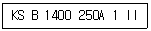
- 100
- 140
- 250
- 1400
(정답률: 62%)
20. 스프링을 도시할 경우 그림 안에 기입하기 힘든 사항은 일괄하여 스프링 요목표에 기입한다. 다음 중 압축 코일 스프링의 요목표에 기입되는 항목으로 거리가 먼 것은?
- 재료의 지름
- 감김 방향
- 자유 길이
- 초기 장력
(정답률: 50%)
21. 단면도의 표시방법에서 그림과 같은 단면도의 명칭은?
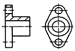
- 전단면도
- 한쪽 단면도
- 부분 단면도
- 회전 도시 단면도
(정답률: 54%)
22. 그림과 같이 제 3각법으로 정투상하여 나타낸 도면에서 누락된 평면도로 가장 적합한 것은?
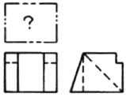
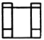
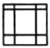
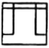
(정답률: 53%)
23. 표면의 결 기호와 함께 사용하는 가공 방법의 약호에서 리밍 작업 기호는?
- BR
- FR
- SH
- FL
(정답률: 57%)
24. 도면에서 특수한 가공(고주파 담금질 등)을 실시하는 부분을 표시할 때 사용하는 선의 종류는?
- 굵은 실선
- 가는 1점 쇄선
- 가는 실선
- 굵은 1점 쇄선
(정답률: 62%)
25. KS 기하 공자 기호 중 원통도의 표시 기호는?
(정답률: 76%)
26. 원통 연삭에서 바깥지름 연삭 방식 중 연삭숫돌을 숫돌 반지름 방향으로 이송하면서, 원통면, 단이 있는 면등의 전체 길이를 동시에 연삭하는 방식은?
- 테이블 왕복형
- 숫돌대 왕복형
- 플런지 컷형
- 공작물 왕복형
(정답률: 44%)
27. 밀링 머신에서 지름 70㎜인 초경합금의 밀링커터로 가공물을 절삭할 때 커터의 회전수는 몇 rpm인가?(단, 절삭속도는 120m/min 이다.)
- 545
- 556
- 566
- 576
(정답률: 54%)
28. 밀링 머신에서 분할대는 어디에 설치하는가?
- 심압대
- 스핀들
- 새들 위
- 테이블 위
(정답률: 62%)
29. 그림과 같이 작은 나사나 볼트의 머리를 일감에 묻히게 하기 위하여 단이 있는 구멍 뚫기를 하는 작업은?
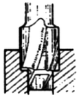
- 카운터 보링
- 카운터 싱킹
- 스폿 페이싱
- 리밍
(정답률: 64%)
30. 선반을 구성하는 4대 주요부로 짝지어진 것은?
- 주축대, 심압대, 왕복대, 베드
- 회전센터, 면판, 심압축, 정지센터
- 복식공구대, 공구대, 새들, 에이프런
- 리드스크루, 이송축, 기어상자, 다리
(정답률: 82%)
3과목: 기계공작법
31. Al2O3분말에 TiC 또는 TiN 분말을 혼합하여 수소 분위기 속에서 소결하여 제작하는 공구 재료는?
- 세라믹(ceramic)
- 주조 경질합금(cast alloyed hard metal)
- 서멧(cermet)
- 소결 초경합금(sintered hard metal)
(정답률: 44%)
32. M5 × 0.8 탭 작업을 할 때 가장 적합한 드릴 지름은?
- 4㎜
- 4.2㎜
- 5㎜
- 5.8㎜
(정답률: 58%)
33. 연삭숫돌의 결합제 중 주성분이 점토이고 가장 많이 사용되고 있으면 기호를 "V"로 표시하는 결합제는?
- 비트리파이드
- 실리케이트
- 셀락
- 레지노이드
(정답률: 65%)
34. 구멍용 한계 게이지가 아닌 것은?
- 원통형 플러그 게이지
- 봉 게이지
- 터보 게이지
- 스냅 게이지
(정답률: 50%)
35. 기계가공에서 절삭성능을 높이기 위하여 절삭유를 사용한다. 절삭유의 사용 목적으로 틀린 것은?
- 절삭공구의 절삭온도를 저하시켜 공구의 경도를 유지 시킨다.
- 절삭속도를 높일 수 있어 공구수명을 연장시키는 효과가 있다.
- 절삭 열을 제거하여 가공물의 변형을 감소시키고, 치수 정밀도를 높여 준다.
- 냉각성과 윤활성이 좋고, 기계적 마모를 크게 한다.
(정답률: 71%)
36. 다음 중 수평밀링머신에서 주로 사용하는 커터는?
- 엔드밀
- 메탈 쏘
- T홈 커터
- 데브테일 커터
(정답률: 46%)
37. 수평밀링머신의 프레인 커터 작업에서 상향절삭과 비교한 하향절삭(매려깍기)의 장점으로 옳은 것은?(오류 신고가 접수된 문제입니다. 반드시 정답과 해설을 확인하시기 바랍니다.)
- 날 자리 간격이 짧고, 가공면이 깨끗하다.
- 기계에 무리를 주지 않는다.
- 이송 기구의 백래시가 자연히 제거된다.
- 절삭열에 의한 치수 정밀도의 변화가 작다.
(정답률: 45%)
38. 특정한 모양이나 치수의 제품을 대량으로 생산하기 위한 목적으로 제작된 공작 기계는?
- 단능 공작 기계
- 만능 공작 기계
- 범용 공작 기계
- 전용 공작 기계
(정답률: 71%)
39. 빌트업 에지(built-up edge)의 발생을 감소시키기 위한 방법이 아닌 것은?
- 절삭 속도를 작게 한다.
- 윤활성이 좋은 절삭 유제를 사용한다.
- 절삭 깊이를 얕게 한다.
- 공구의 윗면 경사각을 크게 한다.
(정답률: 65%)
40. 수나사의 유효지름 측정 방법이 아닌 것은?
- 콤비네이션 세트에 의한 방법
- 삼침법에 의한 방법
- 공구 현미경에 의한 방법
- 나사 마이크로미터에 의한 방법
(정답률: 54%)
4과목: CNC공작법 및 안전관리
41. 선반 척 중 불규칙한 일감을 고정하는데 편리하며 4개 조로 구성되어 있는 것은?
- 단동척
- 콜릿척
- 마그네틱척
- 연동척
(정답률: 67%)
42. 방전 가공에 대한 일반적인 특징으로 틀린 것은?
- 전극은 구리나 흑연 등을 사용한다.
- 전기 도체이면 쉽게 가공할 수 있다.
- 전극의 형상대로 정밀하게 가공할 수 있다.
- 공작물은 음극, 공구는 양극으로 한다.
(정답률: 56%)
43. 머시닝센터 작업시 공구의 길이가 그림과 같을 때 다음 프로그램에서 T02의 공구 길이 보정값은?
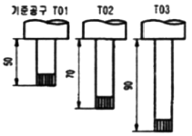
- 20
- -20
- -40
- 40
(정답률: 64%)
44. CNC 공작기계의 일상 점검중 매일 점검 내용에 해당하지 않는 것은?
- 베드면에 습동유가 나오는지 손으로 확인한다.
- 유압 탱크의 유량은 충분한가 확인한다.
- 각축은 원활하게 급속이동 되는지 확인한다.
- NC 장치 필터 상태를 확인한다.
(정답률: 64%)
45. 그림은 바깥지름 막깍기 사이클의 공구 경로를 나타낸 것이다. 복합형 고정 사이클의 명령어는?
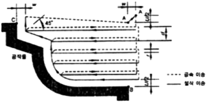
- G70
- G71
- G72
- G73
(정답률: 46%)
46. 다음 CNC 선반 프로그램에서 분당이송(㎜/min)의 값은?
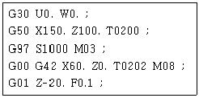
- 100
- 200
- 300
- 400
(정답률: 52%)
47. CNC 프로그램에서 보조 프로그램을 사용하는 방법이다. (A), (B), (C)에 차례로 들어갈 어드레스로 적당한 것은?
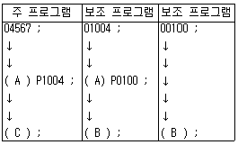
- (A) : M98, (B) : M02, (C) : M99
- (A) : M98, (B) : M99, (C) : M02
- (A) : M30, (B) : M99, (C) : M02
- (A) : M30, (B) : M02, (C) : M99
(정답률: 51%)
48. CNC 선반 절삭가공의 작업 안전에 관한 사항으로 틀린 것은?
- 절삭유의 비산을 방지하기 위하여 문(door)을 닫는다.
- 절삭 가공 중에 반드시 보안경을 착용한다.
- 공작물이 튀어나오지 않도록 확실하게 고정한다.
- 칩의 제거는 면장갑을 끼고 손으로 제거한다.
(정답률: 83%)
49. 서보 제어방식 중 모터에 내장된 타코 제네레이터에서 속도를 검축하고, 기계의 테이블에 부착된 스케일에서 위치를 검출하여 피드백 시키는 방식은?
- 개방회로 방식
- 반폐쇄회로 방식
- 폐쇄회로 방식
- 반개방회로 방식
(정답률: 43%)
50. 범용 공작기계와 CNC 공작기계를 비교하였을 때 CNC 공작기계가 유리한 점이 아닌 것은?
- 복잡한 형상의 부품가공에 성능을 발휘한다.
- 품질이 균일화되어 제품의 호환성을 유지할 수 있다.
- 장시간 자동운전이 가능하다.
- 숙련에 오랜 시간과 경험이 필요하다.
(정답률: 76%)
51. 200rpm으로 회전하는 스핀들 5회전 휴지를 지령하는 것으로 옳은 것은?
- G04 X1.5 ;
- G04 X0.7 ;
- G40 X1.5 ;
- G40 X0.7 ;
(정답률: 62%)
52. 다음 입출력 장치 중 출력장치가 아닌 것은?
- 하드 카피장치(hard copier)
- 플로터(plotter)
- 프린터(printer)
- 디지타이저(digitizer)
(정답률: 51%)
53. 기계의 기준점인 기계원점을 기준으로 정한 좌표계이며, 기계제작자가 파라미터에 의해 정하는 좌표계는?
- 공작물 좌표계
- 상대 좌표계
- 기계 좌표계
- 증분 좌표계
(정답률: 67%)
54. CNC 프로그램에서 몇 개의 단어들이 모여 구성된 한개의 지령단위를 지령절(Block)이라고 하는데 지령절과 지령절을 구분하는 것은?
- KS
- EOB
- ISO
- DNC
(정답률: 72%)
55. CNC 공작기계에서 자동 운전을 실행하기 전에 도면의 임의의 점에 좌표계 원점을 정하고, 작성 프로그램을 테이블 위에 있는 일감에 적용시켜 원점 위치를 설정하는 것은?
- 공작물 좌표계 설정
- 상대 좌표계 설정
- 기계 좌표계 설정
- 잔여 좌표계 설정
(정답률: 51%)
56. 다음중 원호보간 지령과 관계가 없는 것은?
- G02
- G03
- R
- M09
(정답률: 74%)
57. 머시닝센터 가공시 평면을 선택하는 G 코드가 아닌 것은?
- G17
- G18
- G19
- G20
(정답률: 69%)
58. CNC 프로그램에서 "G97 s200 ;"에 대한 설명으로 맞는 것은?
- 주축은 200rpm으로 회전한다.
- 주축 속도가 200m/min이다.
- 주축의 최고 회전수는 200rpm 이다.
- 주축의 최저 회전수는 200rpm 이다.
(정답률: 46%)
59. 드릴링 머신의 작업시 안전 사항 중 틀린 것은?
- 드릴을 회전시킨 후에는 테이블을 조정하지 않는다.
- 드릴을 고정하거나 풀 때는 주축이 완전히 정지한 후에 작업을 한다.
- 드릴이나 드릴 소켓 등을 뽑을 때는 해머 등으로 가볍게 두드려 뽑는다.
- 얇은 판의 구멍 뚫기에는 밑에 보조 판 나무를 사용하는 것이 좋다.
(정답률: 60%)
60. CNC 선반 프로그램에서 나사 가공에 대한 설명 중 틀린 것은?
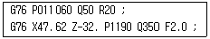
- G76은 복합 사이클을 이용한 나사 가공이다.
- 나사산의 각도는 50°이다.
- 나사가공의 최종지름은 47.62mm이다.
- 나사의 리드는 2.0mm이다.
(정답률: 50%)